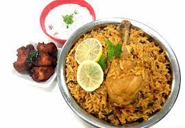
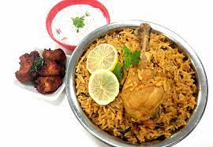
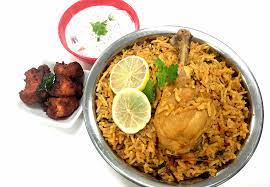
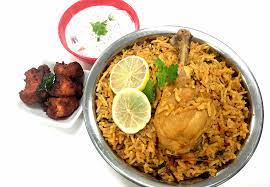

 

Rice staples, Tomato Rice, Paruppu, sambar, rasam, poriyal and koottu are added with butter or curd to prepare pachadi. Dry and fresh fruits or vegetables are also used to prepare traditional cuisine. They serve salt, pickles, payasam, and aviyal.
There are so many types of Dosas. There are a few famous kinds of dosa which are available all over the country. Let's start with paper dosa. Most of the dosas are paper-thin and like all the other Tamil Nadu Food, it is made by a batter with the mixture of urad dal and rice, spread over a pan and cooked mildly. It is then shaped into a thin paper-like layer and served in a cone shape along with some chutney and sambar. All the other dosas are made in the same way but depending on their names the extra ingredients are added. Like the egg, dosa has the same procedure but an egg is cracked and poured onto the dosa, spread across and cooked along with the dosa in some oil/ghee. Some other kinds of dosas are: Tomato Dosa, Onion Dosa, Rawa Dosa, Vegetable Dosa, Plain Dosa, Masala Dosa etc.
Idli and Vada, collectively save breakfasts for people who are late in the mornings, almost every time! These Tamil Nadu food items complement each other beautifully and are total comfort foods. Idli is made with a mixture of urad dal and rice and looks like a small, spongy pancake once cooked and is one of the signature dishes of Tamil Nadu. Vada, on the other hand, is either doughnut-shaped or round like idli and is prepared with fermented Bengal gram mixed with curry leaf, cumin seed and mustard seed. The vada is then shaped and deep-fried giving us a crispy yet soft food served with sambar and coconut chutney.
Rice staples, Tomato Rice, Paruppu, sambar, rasam, poriyal and koottu are added with butter or curd to prepare pachadi. Dry and fresh fruits or vegetables are also used to prepare traditional cuisine. They serve salt, pickles, payasam, and aviyal.
A piquant desert, Payasam is a popular second course in Tamilnadu. This dish is prepared by roasting moong dal and cooking it in a pressure cooker along with adding jaggery syrup and dry fruits.
A perfect epitome of South Indian cuisine is Prawns Kuzhambu, serving as a gastronomic delight in Tamilnadu. The prawns are marinated in masala which gives it a strong tangy taste.
This delectable dish is very much similar to dosa but what makes it different is the topping of tomatoes, onions, capsicum, and other veggies. Uttapam tastes heavenly good with either spicy tomato or coconut chutney.
This mouth-watering dish is a specialty of the Chettiyar community of Tamil Nadu. Contrary to popular believes, there are many regional non vegetarian dishes within the broad category of Tamil food. Every region has its variations and Chettinad cuisine happens to be one of them. It is chicken marinated in yogurt, turmeric, a variety of spices such as poppy seeds, coriander seeds, cumin seeds and fennel seeds, and other flavour add ons. It can be prepared in a dry or gravy style and is enjoyed with either steamed rice or a rice flour paratha.
Tamil Nadu has always been a hub for food connoisseurs to take a great pleasure of some of the finest traditional cuisine in the country. The state is reckoned to be one of the best places in India for offering a bagful of culinary treasure for tourists to savour. But, the fascinating things about Tamil Nadu is the touch of their customary culture which is served with its every delectable fare. Idli, Sambar, Dosa, Uttapam, and Vada are just a few names whenever it comes to popular South Indian food.
Whereas, there are some other equally popular traditional foods of Tamil Nadu that are not much in outside world except the region but are sure to delight your taste buds.
The region is known to offer a wide variety of both vegetarian and non-vegetarian dishes with each holding a unique flavoursome taste. These includes payasam, biryani, chicken chettinad, rasam, mutton curry coconut chutney, parotta, curd rice, upma, lemon rice and much more. A special mention to the lip-smacking seafood of the coastal areas of Tamil Nadu which can give you gastronomic holidays with indelible taste to cherish for a long. And if you're spending your vacation in the central and hilly areas, the authentic fare awaits to fill your mouth with a distinctive taste.
Besides all that, the whole southern region including Tamil Nadu is also recognized for its varied range of spices which are also exported in different nations. Chillies, Tamarind, Cardamom, Coriander, Pepper, Curry Leaves, Cloves, and Mint are some important spices that are produced in the state of Tamil Nadu. These spices are the special secret behind the incredible aroma and scrumptious taste of local dishes of the state.
However, some fixed ingredients used in almost every delicacy include coconut oil, curry leaves, and drumsticks. Along with the main course, the snacks and side dishes in Tamilnadu too proffer an astringent taste. Murukku, Banana Chips, Bonda, Appalam, and Green Gram Sprouts (Moong) are some snacks and side dishes which also should be added to your list of must-try food in Tamilnadu. Not to forget, the state also bids an extensive range of tea, coffee, banana and coconut, which together with other fares, makes Tamilnadu one of the best food getaways in India.
Whereas, the food habit remains almost the same in all season as the weather of the state does not fluctuate much. The popular cuisine of Tamil Nadu perfectly connects with its people and is incredibly dipped with the right amount and quantity of spices along with all other ingredients.